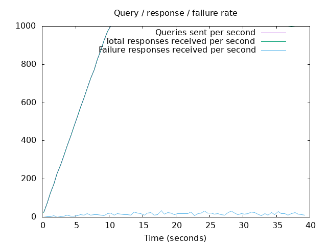
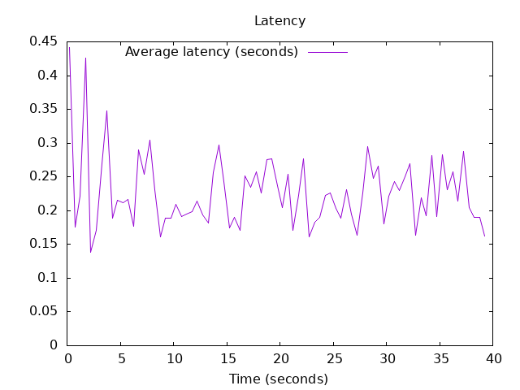

DNS Resolution Performance Testing Tool Version 2.14.0 [Status] Command line: resperf -P 20250619-1346.gnuplot -M doh -s 79.127.218.224 -O doh-uri=https://protective.joindns4.eu/dns-query -d domains_shuffled.list -C 500 -m 1000 -b 1400 -q 500000 -R -r 10 -c 30 -t 30 -F 0 [Status] Sending [Status] Ramp-up done, sending constant traffic [Status] Waiting for more responses [Status] Testing complete Statistics: Queries sent: 34999 Queries completed: 34998 Queries lost: 1 Response codes: NOERROR 23522 (67.21%), SERVFAIL 654 (1.87%), NXDOMAIN 10822 (30.92%) Run time (s): 67.505958 Maximum throughput: 1000.000000 qps Lost at that point: 0.00% Connection attempts: 878 (519 successful, 59.11%) DNS-over-HTTPS statistics: HTTP/2 return codes: 200: 34998
 